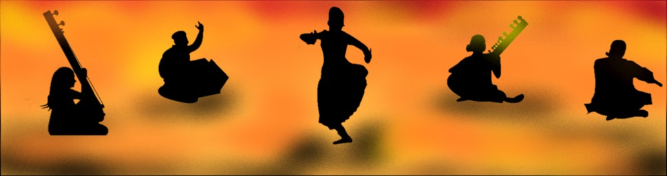

Indian classical dance, otherwise known as Shastriya Nritya, is a term for various performance arts rooted in religious Hindu musical theatre styles, whose theory and practice can be traced to the Sanskrit text Natya Shastra.
The Sangeet Natak Akademi recognizes eight forms of dances as classical. They are
Bharatanatyam, Kathak, Kuchipudi, Odissi, Kathakali, Sattriya, Manipuri and Mohiniyattam.
These dances are traditionally regional, all of them include music and recitation in local language or Sanskrit, and they represent a unity of core ideas in a diversity of styles, costumes and expression.
The Eight Classical Dance Forms Of India
Bharatnatyam |
1.Bharatnatyam is one of the most popular classical Indian dances.
2.It is believed that Bharatnatyam was revealed by Lord Brahma to Bharata, a famous sage who then codified
this sacred dance in a Sanskrit text called the Natya Shastra. |
.jpg) Mallika Sarabhai |
Kathak |
1.Kathak is one of the most important classical dances of India.
2.Kathak is said to be derived from the word katha, meaning "the art of storytelling." |
.jpg) Pandit Birju Maharaj |
Kathakali |
1.Kathakali is the classical dance form of Kerala.
2.The word Kathakali literally means "Story-Play". |
.jpg) Kalamandalam Gopi |
Manipuri |
1.Manipuri dance is indigenous to Manipur, the North-eastern state of India.
2.The Manipuri dance style is inextricably woven into the life pattern of Manipuri people. |
.jpg) Charu Mathur |
Oddisi |
1.Odissi is one of the famous classical Indian dances from Orissa state.
2.The foundations of Odishee are found in Natya Shastra, the ancient Hindu Sanskrit text of performance arts. |
.jpg) Aditi Bandyopadhyay |
Kuchipudi |
1.Kuchipudi is one of the classical dance forms of the South India.
2.Kuchipudi derives its name from the Kuchipudi village of Andhra Pradesh. |
.jpg) Yamini Reddy |
Mohiniyattyam |
1.Mohiniyattam is the classical form of Kerala.
2.Mohiniyattam is a dance form, a form of a beautiful feminine style with surging flow body movements. |
.jpg) Vijayalakshmi |
Sattriya |
1.Sattriya is a classical Indian dance that originated in its eastern state of Assam.
2.Sattras are the Vaishnava monasteries in Assam. |
.jpg) Jatin Goswami |
Indian classical music is a rich tradition that originated in South Asia and can now be found in all corners of the world. It’s origins date back to sacred Vedic scriptures over 6,000 years ago where chants developed a system of musical notes and rhythmic cycles.
During the medieval period, Indian classical music was generally based on two traditions:-
1.The Carnatic music prevalent in South India.
2.The Hindustani classical music in North India.
Hindustani and Carnatic Music
Indian Music is part of Art and culture which have a rich legacy.
Before the 13th Century, there was only one classical music in India.
The history of Indian music can be derived from Natya Shastra, written by Bharatha Muni, a Musicologist. The Natyashastra deals with the basic theory of Music, dance and drama called “Natya Shastra’. Under this, there were 22 notes in an octave. The idea of ‘Sruti’ was presented to permit individuals to select a suitable reference ‘root’ pitch based on the musicians’ ease. A set of ‘Rasas’ and ‘Bhavas’ or expressions were recognized.
Post 13th Century Classical Music has been separated into two different styles. In North India, Persian and Mughal influence began creating its place very intensely with Amir Khusro.
Tansen and his contemporary musicians mostly performed in Dhrupad sort and later Khayal singing was promoted by Sadarang and Adarang.
Carnatic Music was evolved mainly by Shyama Shastri, Tyagraja, Muthuswamy Dikshitar, and Saint Purandardas.
Currently, most of the classical training revolves around Kritis composed by these great saint musicians.
Instruments For The Classical Music Of India
.jpg) |
Violin |
Tanpura |
.jpg) |
.jpg) |
Sarangi |
Saraswati Veena |
.jpg) |
.jpg) |
Rudra Veena |
Harmonium |
.jpg) |
.jpg) |
Flute |
Tabla |
.jpg) |
.jpg) |
Dholak |
Dhol |
.jpg) |
.jpg) |
Jal Taranga |